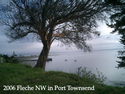

Volume 11 Issue 2 - March 2006
Ride Preview: Spring 200k
Planning: Fleche Preparation
NOTE: Please send any content for the newsletter to Patrick Gray
- With the first brevets of the season upon us, now's the perfect time to review the SIR Rider Expectations.
- In case you missed it, Mark Roerhig is the new coordinator for Permanents. Information on how to register for a Permanent can be found here.
- Various merchandise with the SIR logo can be purchased through CafePress. Just follow this link - http://www.cafepress.com/seattlerando.
- SIR mudflaps are available for purchase at Sammamish Valley Cycles.
Greg Cox
Well the 200k pre-ride tradition continues. The morning greeted us to a few sprinkles, but by the time we were rolling, the skies dried up and we were blessed with the best weather of the year. It was sunny and warm for the entire ride. And, what a wonderful ride it was!I was joined by my traditional pre-ride suspects Mark Thomas, Peter McKay, and Bill Dussler. They have been with me for many of the pre-rides in my seven year tenure of hosting the spring 200k. This year David Huelsbeck also was along for the ride. (My buddy David Rainey joined us for the first half, but peeled off at Black Diamond as he had planned.)
All agreed that the new routing that takes the riders from my house to Browns Point was a great treat. Any ride that can contain sound views and the foothills of the Cascades is a great route. This year's ride zips riders from my house due west up Kent's West Hill. It snakes along Dash Point highway (be sure to look right to get the great views!) to Browns Point. A necessary journey through the suburbia of Federal Way and Auburn will take riders to the 11 mile jewel of the ride; the Green Valley road. A requisite stop at the famous Black Diamond bakery will put you on the familiar route of years past minus the out and back to Hobart and the stretch to Orting.
I think the pre-riders were unanimous; this is the best 200k route ever. Of course, we could be biased based on the weather! Enjoy!
In 2005 six teams, comprised of 26 riders, completed the Fleche Northwest - a 24-hour, 360 kilometer (minimum) ride comprised of various routes all ending at the same location. The rules for a Fleche are extensive; the emphasis is on near-continuous riding with no single stop lasting longer than two hours. How did so many teams start and complete this event? What level of planning was necessary? I conducted an exhaustive e-mail interview with Brian List (Fleche Gordon's Space Cadets) and Duane Wright (team Darth Vaders) to shed light on how to successfully prepare for, and complete, a Fleche. This newsletter also includes a piece Brian wrote about last year's Fleche. Wayne Methner contributed some general advice at the end of this article on Fleche planning.PG: Was this the first time you captained a Fleche team?
Brian: Our first fleche team was in 2003. We have had a team ever since.
Duane: No.PG: How did the team come together?
Brian: Most of the team members had been talking about doing a fleche for a couple years before we actually took the jump, so we just had to invite a couple more people & we had a full team.
Duane: Nearly our entire team had ridden fleches together before.PG: Did everyone help with route planning?
Brian: I did the route planning after running the general route by everyone. Actually now that I think of it, our 1st fleche was the BC fleche, I picked out the route from Oly to Bellingham, I asked Harold Bridge (A famous BC Randoneeur, how famous? He was interviewed in the Rivendell Reader) to do the route from Bellingham to Harrison Hot Springs. I did the planning for the SIR fleche myself.
Duane: Only two of us worked on route planning. The others were dumb enough to trust us. The route planners were a bit in denial about the large number Topo gave us for elevation gain. We learned, the hard way, to be more trusting of Topo.PG: Other than making the distance, did your team have other goals to meet (on-bike average speed, fun factor, elevation gain, etc.)?
Brian: No goals except to finish & have fun. Although we won the Lungs are for Life trophy the 1st year we did the BC fleche, rules for that are pretty involved . If you're interested you can look it up on their website.
Duane: Fun and comfort were both goals. Our distance was only slightly above the minimum, so we had to make it. The elevation gain turned out to be WAY MORE than ANYONE cared for.PG: What were some of the low points during the ride and how did you get through them?
Brian: everyone has different low points at different times. Over the years we've had falls, destroyed bikes, sick people and once we were stopped by a cop for running a stop sign. The main thing is to stick together. There is a tendency to have a low point at dawn when you've ridden all night. It gets better after breakfast. Or, a nap. Last year only three of us could ride.
Duane: We got lost at 1:00 a.m. We were pretty brain dead and burned up an hour. Right around dawn we were all struggling to stay awake. We were fortunate to find a store that had opened at 7:00 a.m. for psychological refueling.PG: What's easier - a small team or a big team?
Brian: I really like the big team better because with more people there's always someone in a good mood to help out anyone that's feeling down. Also more brain power for making decisions.
Duane: The bigger the team, the more herding has to be done at stops. That being said, FOUR BIKES is probably a good number to shoot for, because then you'll have an insurance bike (i.e. THREE bikes must finish). I've been on fleche teams with five bikes, three of them tandems (= EIGHT riders), and it went o.k. But still, the more bodies, the more chaos at stops. Fleche Pacifique has had teams with five tandems (= TEN riders).PG: Did you split up equipment within the group or did everyone pretty much carry what they needed for self-sufficiency?
Brian: everyone carried their own stuff.
Duane: That could be a good idea (since everyone pretty much sticks together). We had a sag, though, meeting us at controls, so we often changed equipment and/or clothing at the controls.PG: How much advance scouting of the route did you do?
Brian: It is imperative that you check every inch of the route in advance. Preferably by bike. You don't want to repeat our experience of last year, getting lost 2 miles from the finish when everyone's tired. I can't emphasize this enough. Check the whole route!
Duane: Not quite enough! ;-(PG: How rigid was your ride schedule? Was there flexibility to make longer or unplanned stops?
Brian: It shouldn't be a problem to do the minimum distance in 24 hour, although we have cut it close in the BC fleche because on that route we leave Olympia at 8pm, ride up 101 to Pt Townsend & catch the 6am ferry. the first time we did that route we missed the 6am ferry and had to push it. The other important thing to keep in mind is that you aren't required to finish the whole route in 24 hours, as long as you have ridden the minimum distance. now, it you route is exactly the minimum distance then you do have to finish in 24 hours. Most teams add a few extra kms just because it's really hard to make the rout come out exact. got all that?
Duane: We didn't pay too much attention to a schedule. What we did do was, at each stop, let the support people know when we thought we'd be at the next stop.PG: What would a rookie captain not think of?
Brian: Don't make your 22 hour stop too far from the finish. You can then try to get to the 22 hour point a little early, have a rest then take it in to the finish nice and easy. Doesn't always work that way though. Also It's a good idea to have riders of similar speeds ride together. My 1st time I rode with a bunch of hammerheads & my self talk was all about "I should just quit & let these guys go ahead, I'm holding them up etc. If you do have someone that is having a hard time keeping up you need to stay with them. you don't want to get way ahead then have to wait and worry for an hour, wondering if you should go back & look for them.
Duane: Chemistry? It's good to have the team do a longer ride together. People will get stressed, and hopefully everyone can remain congenial. Sometimes they don't. Keep the lowest common denominator (i.e. slowest person) in mind. If 3 of the 4 riders want to do 20,000 feet of climbing, and the 4th rider generally finishes 200ks in 13 hours, you might be in for some problems. This is just an example. Work on riding together (incl. drafting) before the event. Consider some sort of psychological break during the dreary hours of the night. Something to perk up the troops. Think carefully about start time. Be realistic about a night start. Sure, it has its pros, but it also has its cons.Duane expanded his thoughts on how to decide what time of day to start:
Morning You can start on a decent night of sleep. If the banquet is at, say, 10:00 a.m., you could start at 9:00 a.m. You're quite tired, during the night, though you're close to the finish. Upon finishing, you get cleaned up for the banquet. Hopefully someone can lug riders home (so they can sleep in the car while driving back).
Night You've already been up for over 12 hours (assuming you had to go to work that day). You get the night riding out of the way while you're most fresh. You finish the evening BEFORE the banquet. You get a decent night of sleep before the banquet, so you're not a space cadet DURING the banquet. The two hour rule only came into being about three years ago. If I understand correctly, what brought it into being was the issue of fast fleche teams sleeping, while their 24 hour period was beginning. Then they'd get out bed, several hours into the time period, and ride the thing.
Wayne's thoughts on planning:
Depending on your previous finish times you should plan a route that is about 380-400 kilometers. KEEP IT SIMPLE! An out/back is okay, a loop is better and a point-to-point is the ideal. That is, a point-to-point that finishes at the planned destination, in this case Port Townsend. Unlike a normal brevet, you don't have to be so exacting in the route...but you're only given credit for the shortest distance between controls. You must make your controls unless there is an adversity, such as a road closure. There are no control times to meet but you must do the following:
1) finish a minimum of 360k in 24 hours;
2) finish within 10% of your planned distance objective;
3) stops may not be longer than two hours at any one control (you must make more or less forward progress for the entire 24 hours; and,
4) complete 25k in the last two hours of the event.As you can see, you don't necessarily have to "finish" your planned route.
The best way to start is to get a Washington State map (or Olympic Peninsula Map) that has the road distances. Then just lay out something that seems fun. Place controls so as to keep you on course and provide appropriate breaks (make sure the night time controls are open all night). Do a little scouting on your weekly training rides. Plan a little two hour break in the wee hours (i.e. between 1am and 4am) so as to keep yourselves fresh. Remember there is a lot of night riding on this one, so extra attention to lights. Write down the controls with leg distances, total distances, and ETA (estimated time of arrival). Review it with your team, review it with me and you are set.
Paul Johnson, Peg Winczewski, Mark Thomas, Terry Zmrhal, Jon Muellner, Peter Beeson, Wayne Methner, Amy Pieper, Patrick Gray
Membership Fee:
$10 - full membership w/online newsletter.
Membership Address:
c/o Terry Zmrhal
9531 112th Ave NE
Kirkland, WA 98033
425-828-7818
Email: membership2006@seattlerandonneur.org
Webmaster: webmaster2006@seattlerandonneur.org